import numpy as np
import pandas as pd
import matplotlib.pyplot as plt
from matplotlib import animation
# torch
import torch
import torch.nn.functional as F
from torch_geometric_temporal.nn.recurrent import GConvGRU
# scipy
from scipy.interpolate import interp1d
# utils
import time
import pickle
from tqdm import tqdm
# rpy2
import rpy2
import rpy2.robjects as ro
from rpy2.robjects.vectors import FloatVector
from rpy2.robjects.packages import importrClass
import
class RecurrentGCN(torch.nn.Module):
def __init__(self, node_features, filters):
super(RecurrentGCN, self).__init__()
self.recurrent = GConvGRU(node_features, filters, 2)
self.linear = torch.nn.Linear(filters, 1)
def forward(self, x, edge_index, edge_weight):
h = self.recurrent(x, edge_index, edge_weight)
h = F.relu(h)
h = self.linear(h)
return hmy functions
def load_data(fname):
with open(fname, 'rb') as outfile:
data_dict = pickle.load(outfile)
return data_dictdef save_data(data_dict,fname):
with open(fname,'wb') as outfile:
pickle.dump(data_dict,outfile)def plot(f,*args,t=None,h=2.5,**kwargs):
T,N = f.shape
if t == None: t = range(T)
fig = plt.figure()
ax = fig.subplots(N,1)
for n in range(N):
ax[n].plot(t,f[:,n],*args,**kwargs)
ax[n].set_title('node='+str(n))
fig.set_figheight(N*h)
fig.tight_layout()
plt.close()
return figdef plot_add(fig,f,*args,t=None,**kwargs):
T = f.shape[0]
N = f.shape[1]
if t == None: t = range(T)
ax = fig.get_axes()
for n in range(N):
ax[n].plot(t,f[:,n],*args,**kwargs)
return figdef make_Psi(T):
W = np.zeros((T,T))
for i in range(T):
for j in range(T):
if i==j :
W[i,j] = 0
elif np.abs(i-j) <= 1 :
W[i,j] = 1
d = np.array(W.sum(axis=1))
D = np.diag(d)
L = np.array(np.diag(1/np.sqrt(d)) @ (D-W) @ np.diag(1/np.sqrt(d)))
lamb, Psi = np.linalg.eigh(L)
return Psi%%R
library(GANR)UsageError: Cell magic `%%R` not found.ebayesthresh = importr('EbayesThresh').ebayesthresh
GNAR = importr('GNAR') # import GNAR def trim(f):
f = np.array(f)
if len(f.shape)==1: f = f.reshape(-1,1)
T,N = f.shape
Psi = make_Psi(T)
fbar = Psi.T @ f # apply dft
fbar_threshed = np.stack([ebayesthresh(FloatVector(fbar[:,i])) for i in range(N)],axis=1)
fhat = Psi @ fbar_threshed # inverse dft
return fhatdef update_from_freq_domain(signal, missing_index):
signal = np.array(signal)
T,N = signal.shape
signal_trimed = trim(signal)
for i in range(N):
signal[missing_index[i],i] = signal_trimed[missing_index[i],i]
return signaltest myfunctions
- read data
data = load_data('./data/fivenodes.pkl')- save data
#save_data(data, './data/fivenodes.pkl')- plot
fig=plot(data['f'],'--',color='C0')
fig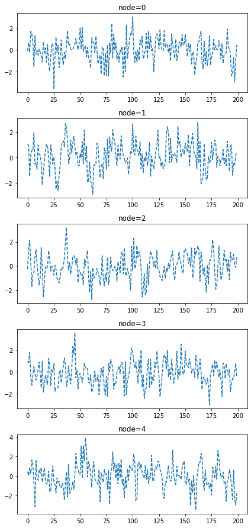
- plot_add
fig=plot_add(fig,data['f'],'o',color='C1')
fig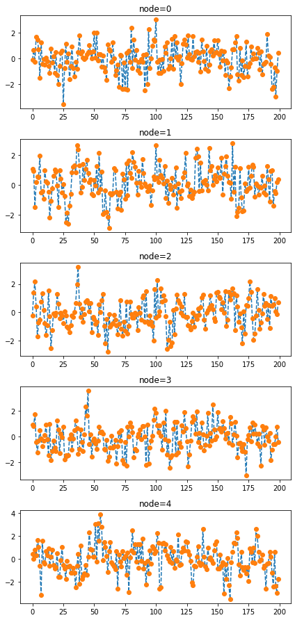
- trim
t = np.linspace(0,10,1000)
f = np.stack([np.sin(2*t) + np.random.randn(1000), np.cos(4*t) + np.random.randn(1000)],axis=1)
fig = plot(f, alpha=0.5)
fig = plot_add(fig, trim(f))
fig.suptitle('blue: observed, orange: trimed',size=14)
fig.tight_layout()
fig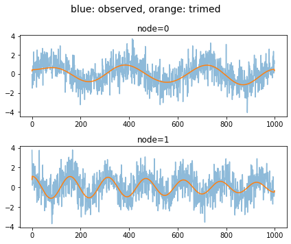
data 정리
- 데이터정리
edges_tensor = torch.tensor(data['edges'])
fiveVTS = np.array(data['f'])
nonzero_indices = edges_tensor.nonzero()
fiveNet_edge = np.array(nonzero_indices).T
T = 200
N = 5 # number of Nodes
E = fiveNet_edge
V = np.array([1,2,3,4,5])
t = np.arange(0,T)
node_features = 1
edge_index = torch.tensor(E)
edge_attr = torch.tensor(np.array([1,1,1,1,1,1,1,1,1,1]),dtype=torch.float32)- train / test
fiveVTS_train = fiveVTS[:int(len(fiveVTS)*0.8)]
fiveVTS_test = fiveVTS[int(len(fiveVTS)*0.8):]fig = plot(fiveVTS,'--.',color='gray')
fig = plot_add(fig,fiveVTS_train,'--o',label='train',color='C0')
fig = plot_add(fig,fiveVTS_test,'--o',label='test',color='C1',t=range(160,200))
ax = fig.get_axes()
for a in ax:
a.legend()
fig.set_figwidth(10)
fig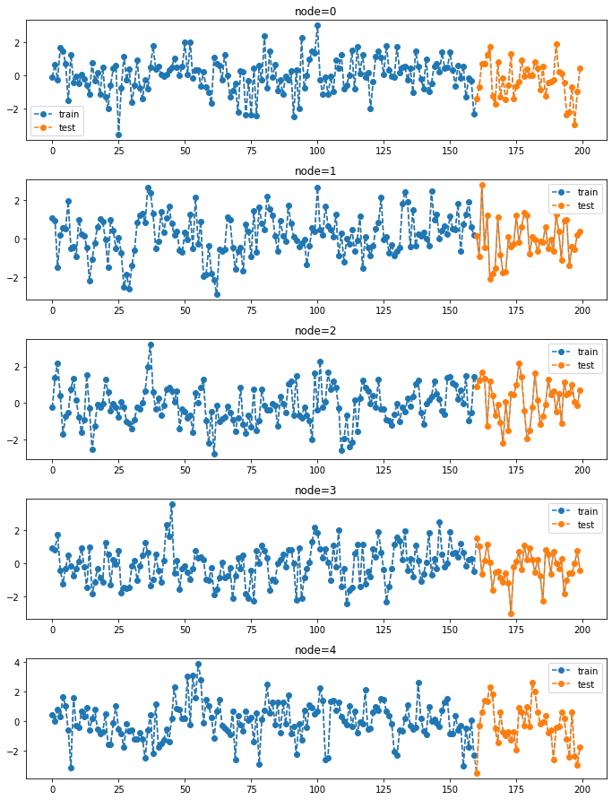
Random Missing Values
class Missing:
def __init__(self,df):
self.df = df
self.N = N
self.number = []
def miss(self,percent=0.5):
self.missing = self.df.copy()
self.percent = percent
for i in range(self.N):
#self.seed = np.random.choice(1000,1,replace=False)
#np.random.seed(self.seed)
self.number.append(np.random.choice(int(len(self.df))-1,int(len(self.df)*self.percent),replace=False))
self.missing[self.number[i],i] = float('nan')
def first_mean(self):
self.train_mean = self.missing.copy()
for i in range(self.N):
self.train_mean[self.number[i],i] = np.nanmean(self.missing[:,i])
def second_linear(self):
self.train_linear = pd.DataFrame(self.missing)
self.train_linear.interpolate(method='linear', inplace=True)
self.train_linear = self.train_linear.fillna(0)
self.train_linear = np.array(self.train_linear).reshape(int(len(self.df)),N)np.random.choice(list(range(11)),4)array([10, 1, 8, 8])np.random.choice?- 30% 결측치 발생
fiveVTS_train.shape(160, 5)_zero = Missing(fiveVTS_train)
_zero.miss(percent = 0.3)fig = plot(fiveVTS,'--o',color='gray',label='complete data',alpha=0.2)
ax = fig.get_axes()
for i,a in enumerate(ax):
a.plot(_zero.missing[:,i],'o',color='C0',label='observed')
a.plot(_zero.number[i],fiveVTS_train[:,i][_zero.number[i]],'x',color='C1',label='missing')
a.legend()
fig.set_figwidth(10)
fig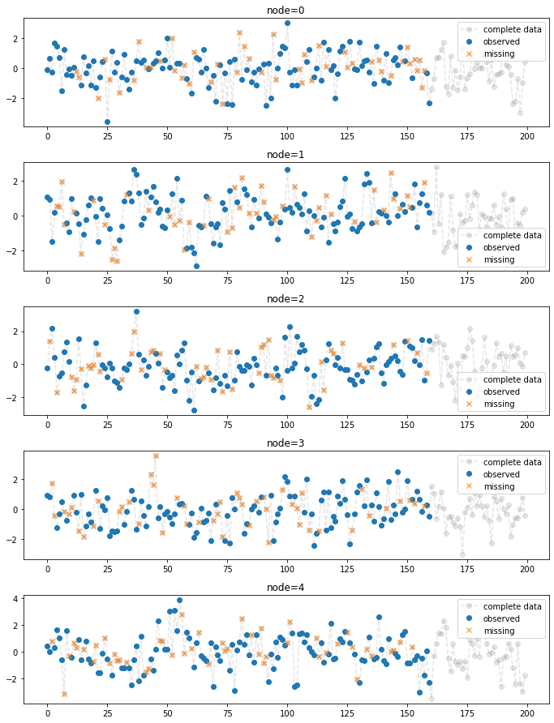
- 결측치를 평균으로 보간
_zero.first_mean()
fig = plot(fiveVTS,'--o',color='gray',label='complete data',alpha=0.2)
ax = fig.get_axes()
for i,a in enumerate(ax):
a.plot(_zero.missing[:,i],'o',color='C0',label='observed')
a.plot(_zero.number[i],fiveVTS_train[:,i][_zero.number[i]],'x',color='C1',label='missing')
a.plot(_zero.train_mean[:,i],'-',color='red',label='padding mean')
a.legend()
fig.set_figwidth(15)
fig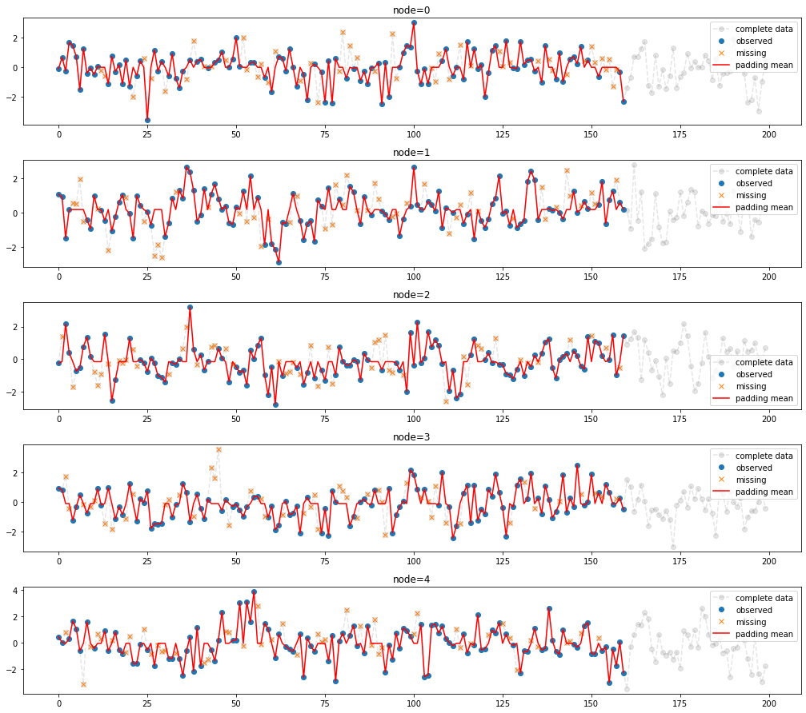
- 결측치를 linear interpolation
_zero.second_linear()
fig = plot(fiveVTS,'--o',color='gray',label='complete data',alpha=0.2)
ax = fig.get_axes()
for i,a in enumerate(ax):
a.plot(_zero.missing[:,i],'o',color='C0',label='observed')
a.plot(_zero.number[i],fiveVTS_train[:,i][_zero.number[i]],'x',color='C1',label='missing')
a.plot(_zero.train_linear[:,i],'-',color='red',label='linear interpolation')
a.legend()
fig.set_figwidth(15)
fig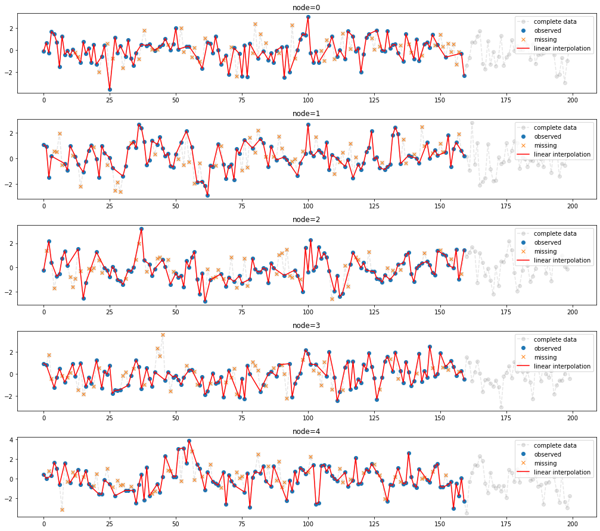
Enhencement of STGCN
시나리오1 (Baseline)
시나리오1
- missing rate: 0%
- 보간방법: None
STGCN 으로 적합 + 예측
X = torch.tensor(fiveVTS_train).reshape(int(T*0.8),N,1).float()[:int(T*0.8-1),:,:]
y = torch.tensor(fiveVTS_train).reshape(int(T*0.8),N,1).float()[1:,:,:]XX = torch.tensor(fiveVTS_test.reshape(int(T*0.2),N,1)[:-1,:,:]).float()
yy = torch.tensor(fiveVTS_test.reshape(int(T*0.2),N,1)[1:,:,:]).float()net = RecurrentGCN(node_features=1, filters=4)
optimizer = torch.optim.Adam(net.parameters(), lr=0.01)
net.train()
for epoch in tqdm(range(50)):
for time, (xt,yt) in enumerate(zip(X,y)):
yt_hat = net(xt, edge_index, edge_attr)
cost = torch.mean((yt_hat-yt)**2)
cost.backward()
optimizer.step()
optimizer.zero_grad()100%|██████████| 50/50 [01:39<00:00, 2.00s/it]yhat = torch.stack([net(xt, edge_index, edge_attr) for xt in X]).detach().numpy()
yyhat = torch.stack([net(xt, edge_index, edge_attr) for xt in XX]).detach().numpy()stgcn_train = yhat.squeeze() # stgcn은 stgcn에 의한 적합결과를 의미함
stgcn_test = yyhat.squeeze() train_mse_eachnode = (((y-yhat).squeeze())**2).mean(axis=0)
train_mse_total = (((y-yhat).squeeze())**2).mean()
test_mse_eachnode = (((yy-yyhat).squeeze())**2).mean(axis=0)
test_mse_total = (((yy-yyhat).squeeze())**2).mean()GNAR 으로 적합 + 예측
-
결과시각화
fig = plot(fiveVTS,'--.',h=4,color='gray',label='complete data',alpha=0.5)
ax = fig.get_axes()
for i,a in enumerate(ax):
a.set_title('node{0} \n mse(train) = {1:.2f}, mse(test) = {2:.2f}'.format(i,train_mse_eachnode[i],test_mse_eachnode[i]))
a.plot(range(1,160),stgcn_train[:,i],label='STCGCN (train)',color='C0')
a.plot(range(161,200),stgcn_test[:,i],label='STCGCN (test)',color='C1')
a.legend()
fig.set_figwidth(14)
fig.suptitle("Scenario1: STGCN \n missing=0% \n interpolation=None \n mse(train) = {0:.2f}, mse(test) = {1:.2f} \n".format(train_mse_total,test_mse_total),size=15)
fig.tight_layout()
fig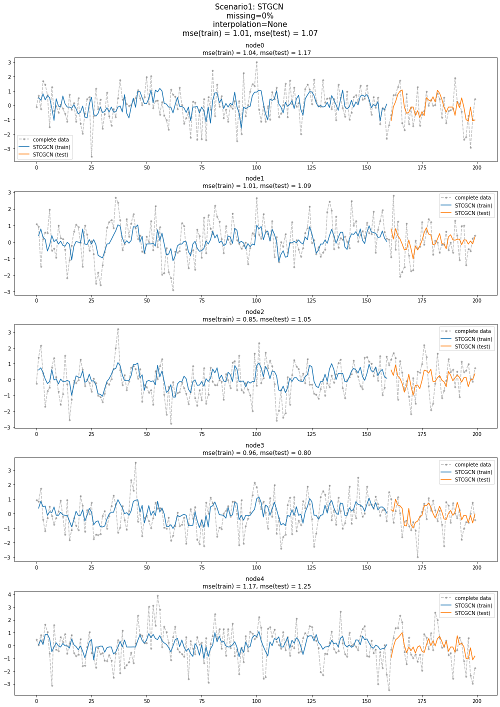
시나리오2
시나리오2
- missing rate: 50%
- 보간방법: linear
- 결측치생성 + 보간
_zero = Missing(fiveVTS_train)
_zero.miss(percent = 0.5)
_zero.second_linear()missing_index = _zero.number
interpolated_signal = _zero.train_linearfig = plot(fiveVTS,'--o',h=4,color='gray',label='complete data',alpha=0.2)
ax = fig.get_axes()
for i,a in enumerate(ax):
a.plot(missing_index[i],fiveVTS_train[:,i][missing_index[i]],'xk',label='missing')
a.plot(interpolated_signal[:,i],'-',color='gray',label='linear interpolation')
a.legend()
fig.set_figwidth(15)
fig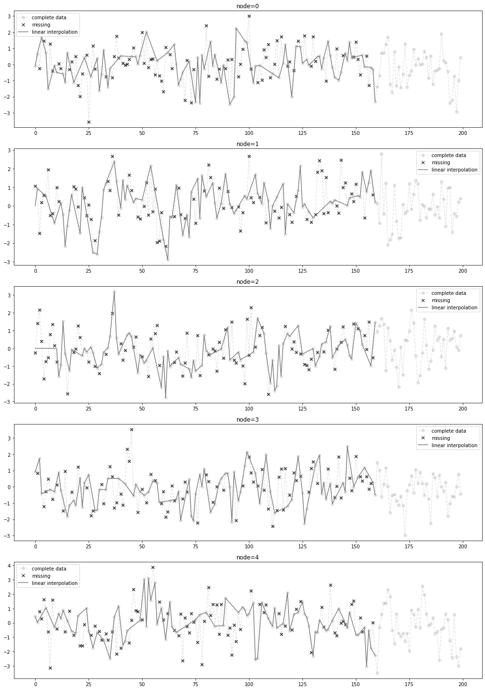
STGCN 으로 적합 + 예측
X = torch.tensor(interpolated_signal).reshape(int(T*0.8),N,1).float()[:int(T*0.8-1),:,:]
y = torch.tensor(interpolated_signal).reshape(int(T*0.8),N,1).float()[1:,:,:]XX = torch.tensor(fiveVTS_test.reshape(int(T*0.2),N,1)[:-1,:,:]).float()
yy = torch.tensor(fiveVTS_test.reshape(int(T*0.2),N,1)[1:,:,:]).float()net = RecurrentGCN(node_features=1, filters=4)
optimizer = torch.optim.Adam(net.parameters(), lr=0.01)
net.train()
for epoch in tqdm(range(50)):
for time, (xt,yt) in enumerate(zip(X,y)):
yt_hat = net(xt, edge_index, edge_attr)
cost = torch.mean((yt_hat-yt)**2)
cost.backward()
optimizer.step()
optimizer.zero_grad()100%|██████████| 50/50 [01:31<00:00, 1.82s/it]yhat = torch.stack([net(xt, edge_index, edge_attr) for xt in X]).detach().numpy()
yyhat = torch.stack([net(xt, edge_index, edge_attr) for xt in XX]).detach().numpy()real_y = torch.tensor(fiveVTS_train).reshape(int(T*0.8),N,1).float()[1:,:,:]
train_mse_eachnode_stgcn = (((real_y-yhat).squeeze())**2).mean(axis=0)
train_mse_total_stgcn = (((real_y-yhat).squeeze())**2).mean()
test_mse_eachnode_stgcn = (((yy-yyhat).squeeze())**2).mean(axis=0)
test_mse_total_stgcn = (((yy-yyhat).squeeze())**2).mean()stgcn_train = yhat.squeeze() # stgcn은 stgcn에 의한 적합결과를 의미함
stgcn_test = yyhat.squeeze() ESTGCN 으로 적합 + 예측
X = torch.tensor(interpolated_signal).reshape(int(T*0.8),N,1).float()[:int(T*0.8-1),:,:]
y = torch.tensor(interpolated_signal).reshape(int(T*0.8),N,1).float()[1:,:,:]XX = torch.tensor(fiveVTS_test.reshape(int(T*0.2),N,1)[:-1,:,:]).float()
yy = torch.tensor(fiveVTS_test.reshape(int(T*0.2),N,1)[1:,:,:]).float()- ESTGCN
net = RecurrentGCN(node_features=1, filters=4)
optimizer = torch.optim.Adam(net.parameters(), lr=0.01)
net.train()
signal = interpolated_signal.copy()
for epoch in tqdm(range(50)):
signal = update_from_freq_domain(signal,missing_index)
X = torch.tensor(signal).reshape(int(T*0.8),N,1).float()[:int(T*0.8-1),:,:]
y = torch.tensor(signal).reshape(int(T*0.8),N,1).float()[1:,:,:]
for time, (xt,yt) in enumerate(zip(X,y)):
yt_hat = net(xt, edge_index, edge_attr)
cost = torch.mean((yt_hat-yt)**2)
cost.backward()
optimizer.step()
optimizer.zero_grad()
signal = torch.concat([X.squeeze(),yt_hat.detach().squeeze().reshape(1,-1)]) 100%|██████████| 50/50 [01:29<00:00, 1.80s/it]yhat = torch.stack([net(xt, edge_index, edge_attr) for xt in X]).detach().numpy()
yyhat = torch.stack([net(xt, edge_index, edge_attr) for xt in XX]).detach().numpy()real_y = torch.tensor(fiveVTS_train).reshape(int(T*0.8),N,1).float()[1:,:,:]
train_mse_eachnode_estgcn = (((real_y-yhat).squeeze())**2).mean(axis=0)
train_mse_total_estgcn = (((real_y-yhat).squeeze())**2).mean()
test_mse_eachnode_estgcn = (((yy-yyhat).squeeze())**2).mean(axis=0)
test_mse_total_estgcn = (((yy-yyhat).squeeze())**2).mean()estgcn_train = yhat.squeeze() # stgcn은 stgcn에 의한 적합결과를 의미함
estgcn_test = yyhat.squeeze() 결과시각화
fig = plot(fiveVTS,'--.',h=4,color='gray',label='complete data',alpha=0.5)
ax = fig.get_axes()
for i,a in enumerate(ax):
a.set_title('node{0} \n STGCN: mse(train) = {1:.2f}, mse(test) = {2:.2f} \n ESTGCN: mse(train) = {3:.2f}, mse(test) = {4:.2f}'.format(i,train_mse_eachnode_stgcn[i],test_mse_eachnode_stgcn[i],train_mse_eachnode_estgcn[i],test_mse_eachnode_estgcn[i]))
a.plot(missing_index[i],fiveVTS_train[:,i][missing_index[i]],'xk',label='missing')
a.plot(interpolated_signal[:,i],'-',color='gray',label='linear interpolation')
a.plot(range(1,160),stgcn_train.squeeze()[:,i],'--.',label='STCGCN (train)',color='C0')
a.plot(range(161,200),stgcn_test.squeeze()[:,i],'--.',label='STCGCN (test)',color='C0')
a.plot(range(1,160),estgcn_train.squeeze()[:,i],label='ESTCGCN (train)',color='C1')
a.plot(range(161,200),estgcn_test.squeeze()[:,i],label='ESTCGCN (test)',color='C1')
a.legend()
fig.set_figwidth(14)
fig.suptitle("Scenario2: \n missing=50% \n interpolation=linear \n\n STGCN: mse(train) = {0:.2f}, mse(test) = {1:.2f} \n ESTGCN: mse(train) = {2:.2f}, mse(test) = {3:.2f} \n".format(train_mse_total_stgcn,test_mse_total_stgcn,train_mse_total_estgcn,test_mse_total_estgcn),size=15)
fig.tight_layout()
fig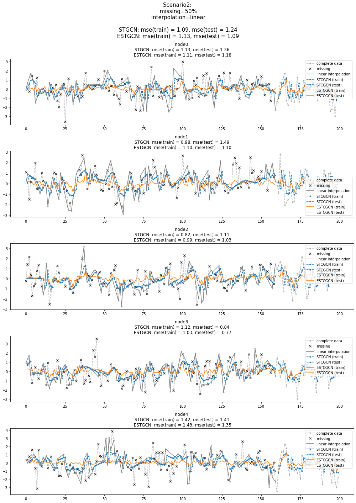
시나리오3
시나리오3
- missing rate: 80%
- 보간방법: linear
- 결측치생성 + 보간
_zero = Missing(fiveVTS_train)
_zero.miss(percent = 0.8)
_zero.second_linear()missing_index = _zero.number
interpolated_signal = _zero.train_linearfig = plot(fiveVTS,'--o',h=4,color='gray',label='complete data',alpha=0.2)
ax = fig.get_axes()
for i,a in enumerate(ax):
a.plot(missing_index[i],fiveVTS_train[:,i][missing_index[i]],'xk',label='missing')
a.plot(interpolated_signal[:,i],'-',color='gray',label='linear interpolation')
a.legend()
fig.set_figwidth(15)
fig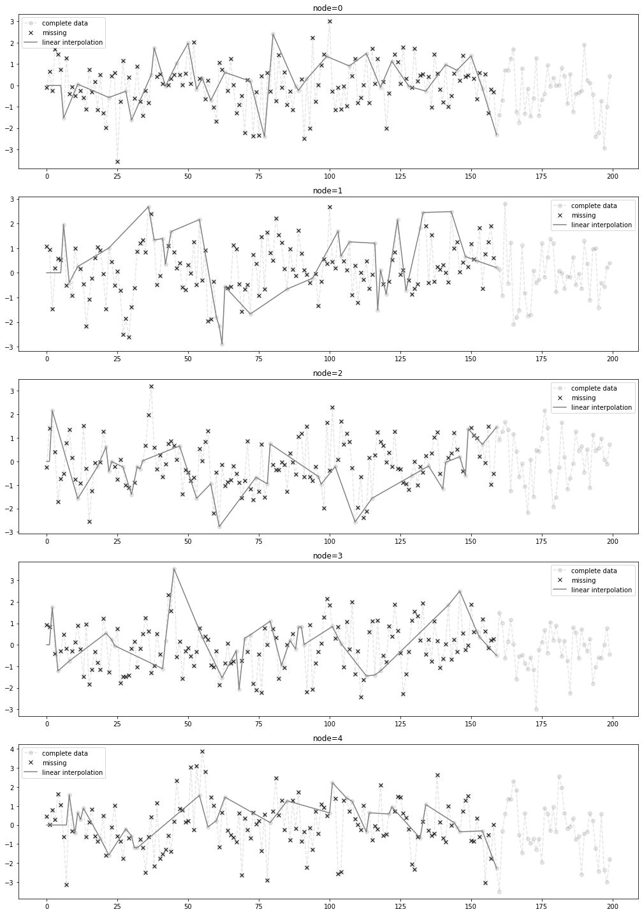
STGCN 으로 적합 + 예측
X = torch.tensor(interpolated_signal).reshape(int(T*0.8),N,1).float()[:int(T*0.8-1),:,:]
y = torch.tensor(interpolated_signal).reshape(int(T*0.8),N,1).float()[1:,:,:]XX = torch.tensor(fiveVTS_test.reshape(int(T*0.2),N,1)[:-1,:,:]).float()
yy = torch.tensor(fiveVTS_test.reshape(int(T*0.2),N,1)[1:,:,:]).float()net = RecurrentGCN(node_features=1, filters=4)
optimizer = torch.optim.Adam(net.parameters(), lr=0.01)
net.train()
for epoch in tqdm(range(50)):
for time, (xt,yt) in enumerate(zip(X,y)):
yt_hat = net(xt, edge_index, edge_attr)
cost = torch.mean((yt_hat-yt)**2)
cost.backward()
optimizer.step()
optimizer.zero_grad()100%|██████████| 50/50 [01:27<00:00, 1.76s/it]yhat = torch.stack([net(xt, edge_index, edge_attr) for xt in X]).detach().numpy()
yyhat = torch.stack([net(xt, edge_index, edge_attr) for xt in XX]).detach().numpy()real_y = torch.tensor(fiveVTS_train).reshape(int(T*0.8),N,1).float()[1:,:,:]
train_mse_eachnode_stgcn = (((real_y-yhat).squeeze())**2).mean(axis=0)
train_mse_total_stgcn = (((real_y-yhat).squeeze())**2).mean()
test_mse_eachnode_stgcn = (((yy-yyhat).squeeze())**2).mean(axis=0)
test_mse_total_stgcn = (((yy-yyhat).squeeze())**2).mean()stgcn_train = yhat.squeeze() # stgcn은 stgcn에 의한 적합결과를 의미함
stgcn_test = yyhat.squeeze() ESTGCN 으로 적합 + 예측
X = torch.tensor(interpolated_signal).reshape(int(T*0.8),N,1).float()[:int(T*0.8-1),:,:]
y = torch.tensor(interpolated_signal).reshape(int(T*0.8),N,1).float()[1:,:,:]XX = torch.tensor(fiveVTS_test.reshape(int(T*0.2),N,1)[:-1,:,:]).float()
yy = torch.tensor(fiveVTS_test.reshape(int(T*0.2),N,1)[1:,:,:]).float()- ESTGCN
net = RecurrentGCN(node_features=1, filters=4)
optimizer = torch.optim.Adam(net.parameters(), lr=0.01)
net.train()
signal = interpolated_signal.copy()
for epoch in tqdm(range(50)):
signal = update_from_freq_domain(signal,missing_index)
X = torch.tensor(signal).reshape(int(T*0.8),N,1).float()[:int(T*0.8-1),:,:]
y = torch.tensor(signal).reshape(int(T*0.8),N,1).float()[1:,:,:]
for time, (xt,yt) in enumerate(zip(X,y)):
yt_hat = net(xt, edge_index, edge_attr)
cost = torch.mean((yt_hat-yt)**2)
cost.backward()
optimizer.step()
optimizer.zero_grad()
signal = torch.concat([X.squeeze(),yt_hat.detach().squeeze().reshape(1,-1)]) 100%|██████████| 50/50 [01:32<00:00, 1.86s/it]yhat = torch.stack([net(xt, edge_index, edge_attr) for xt in X]).detach().numpy()
yyhat = torch.stack([net(xt, edge_index, edge_attr) for xt in XX]).detach().numpy()real_y = torch.tensor(fiveVTS_train).reshape(int(T*0.8),N,1).float()[1:,:,:]
train_mse_eachnode_estgcn = (((real_y-yhat).squeeze())**2).mean(axis=0)
train_mse_total_estgcn = (((real_y-yhat).squeeze())**2).mean()
test_mse_eachnode_estgcn = (((yy-yyhat).squeeze())**2).mean(axis=0)
test_mse_total_estgcn = (((yy-yyhat).squeeze())**2).mean()estgcn_train = yhat.squeeze() # stgcn은 stgcn에 의한 적합결과를 의미함
estgcn_test = yyhat.squeeze() 결과시각화
fig = plot(fiveVTS,'--.',h=4,color='gray',label='complete data',alpha=0.5)
ax = fig.get_axes()
for i,a in enumerate(ax):
a.set_title('node{0} \n STGCN: mse(train) = {1:.2f}, mse(test) = {2:.2f} \n ESTGCN: mse(train) = {3:.2f}, mse(test) = {4:.2f}'.format(i,train_mse_eachnode_stgcn[i],test_mse_eachnode_stgcn[i],train_mse_eachnode_estgcn[i],test_mse_eachnode_estgcn[i]))
a.plot(missing_index[i],fiveVTS_train[:,i][missing_index[i]],'xk',label='missing')
a.plot(interpolated_signal[:,i],'-',color='gray',label='linear interpolation')
a.plot(range(1,160),stgcn_train.squeeze()[:,i],'--.',label='STCGCN (train)',color='C0')
a.plot(range(161,200),stgcn_test.squeeze()[:,i],'--.',label='STCGCN (test)',color='C0')
a.plot(range(1,160),estgcn_train.squeeze()[:,i],label='ESTCGCN (train)',color='C1')
a.plot(range(161,200),estgcn_test.squeeze()[:,i],label='ESTCGCN (test)',color='C1')
a.legend()
fig.set_figwidth(14)
fig.suptitle("Scenario3: \n missing=80% \n interpolation=linear \n\n STGCN: mse(train) = {0:.2f}, mse(test) = {1:.2f} \n ESTGCN: mse(train) = {2:.2f}, mse(test) = {3:.2f} \n".format(train_mse_total_stgcn,test_mse_total_stgcn,train_mse_total_estgcn,test_mse_total_estgcn),size=15)
fig.tight_layout()
fig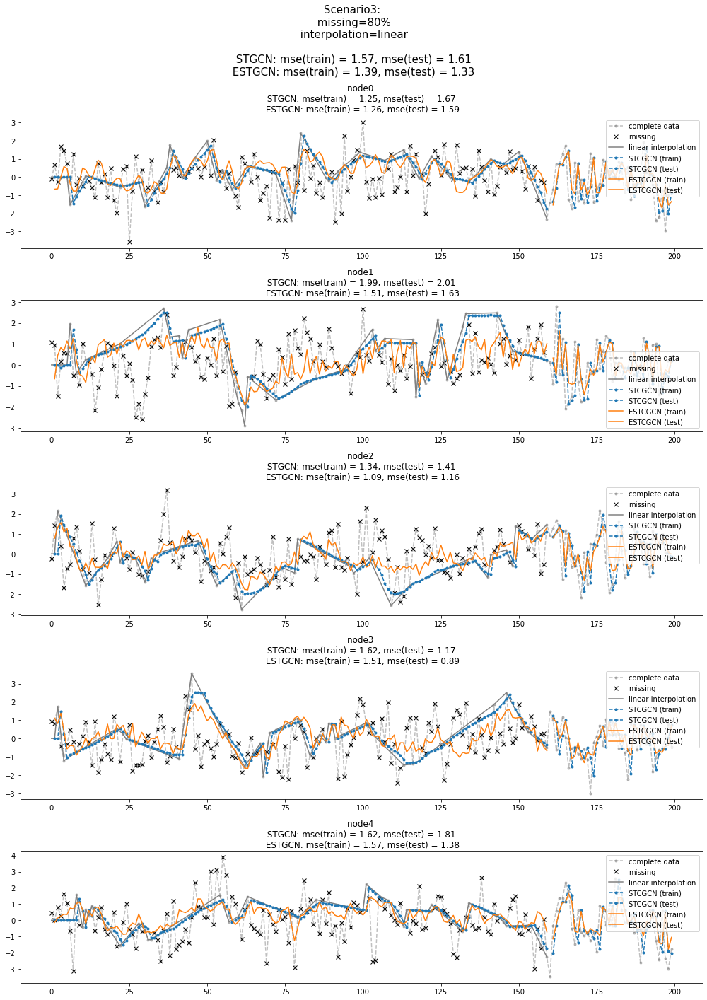